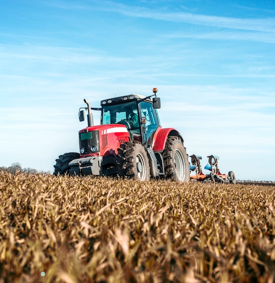
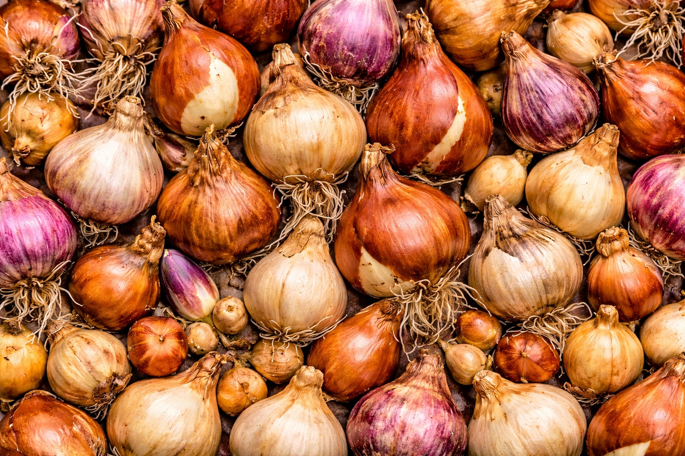
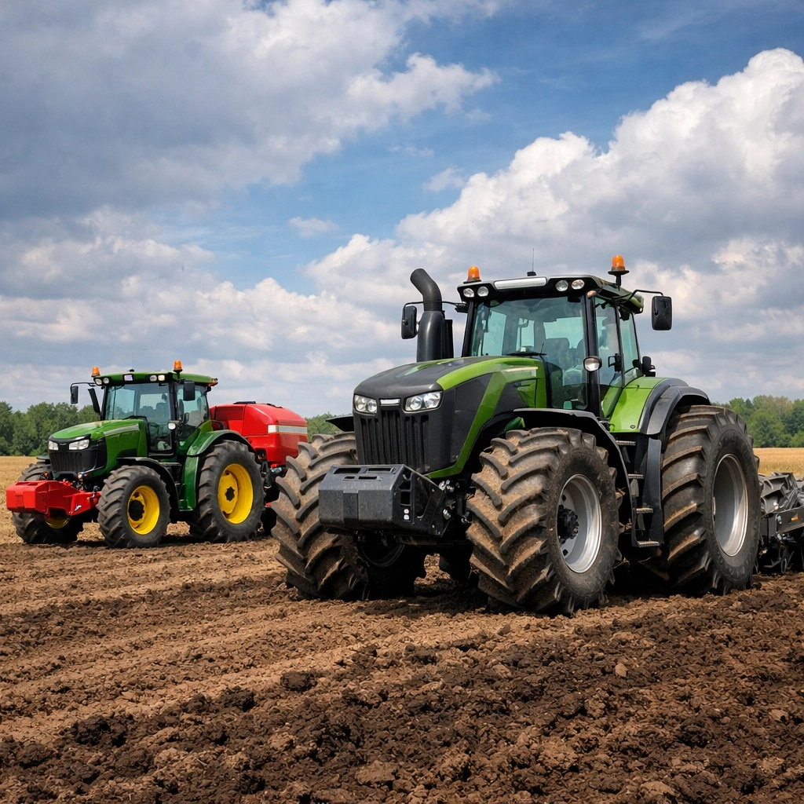
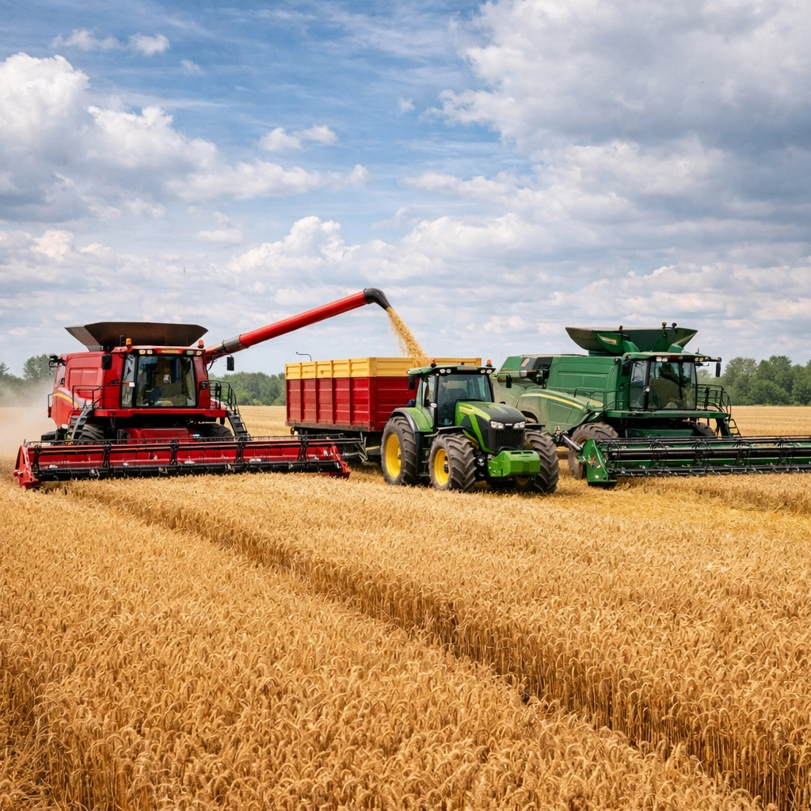
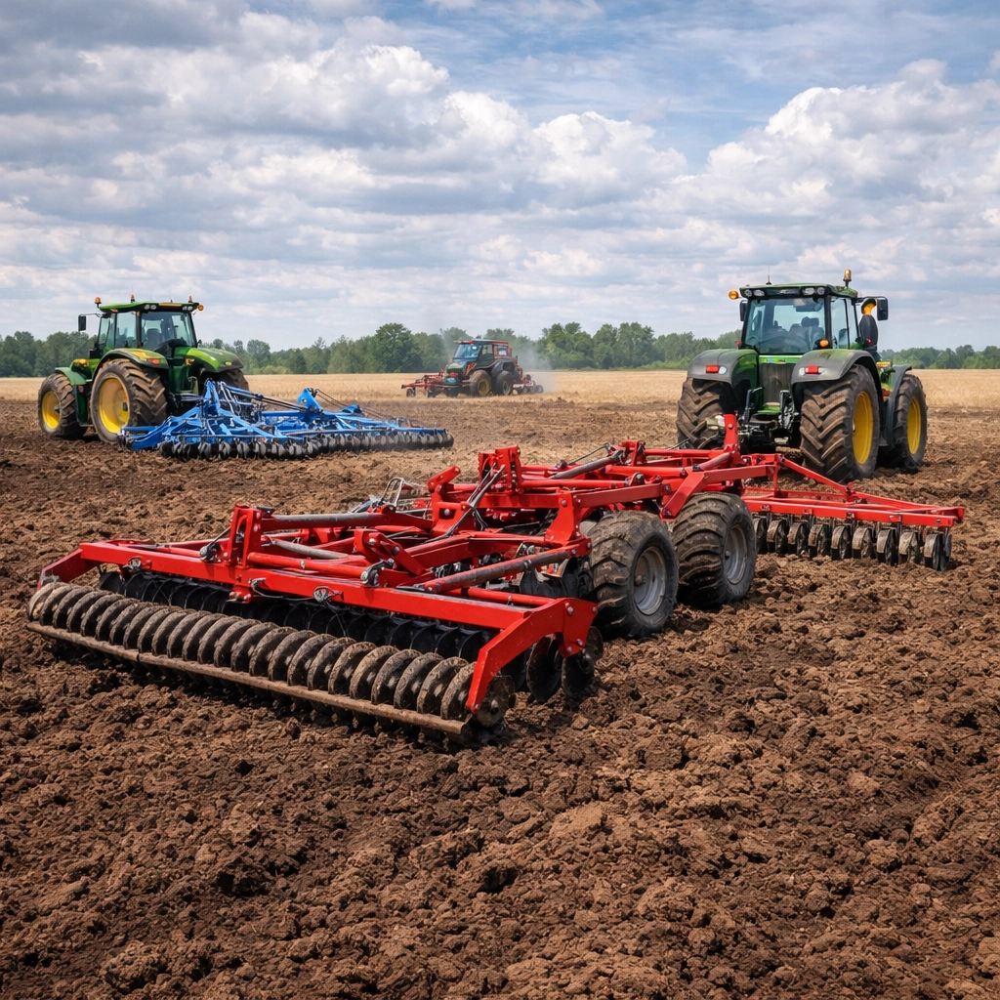
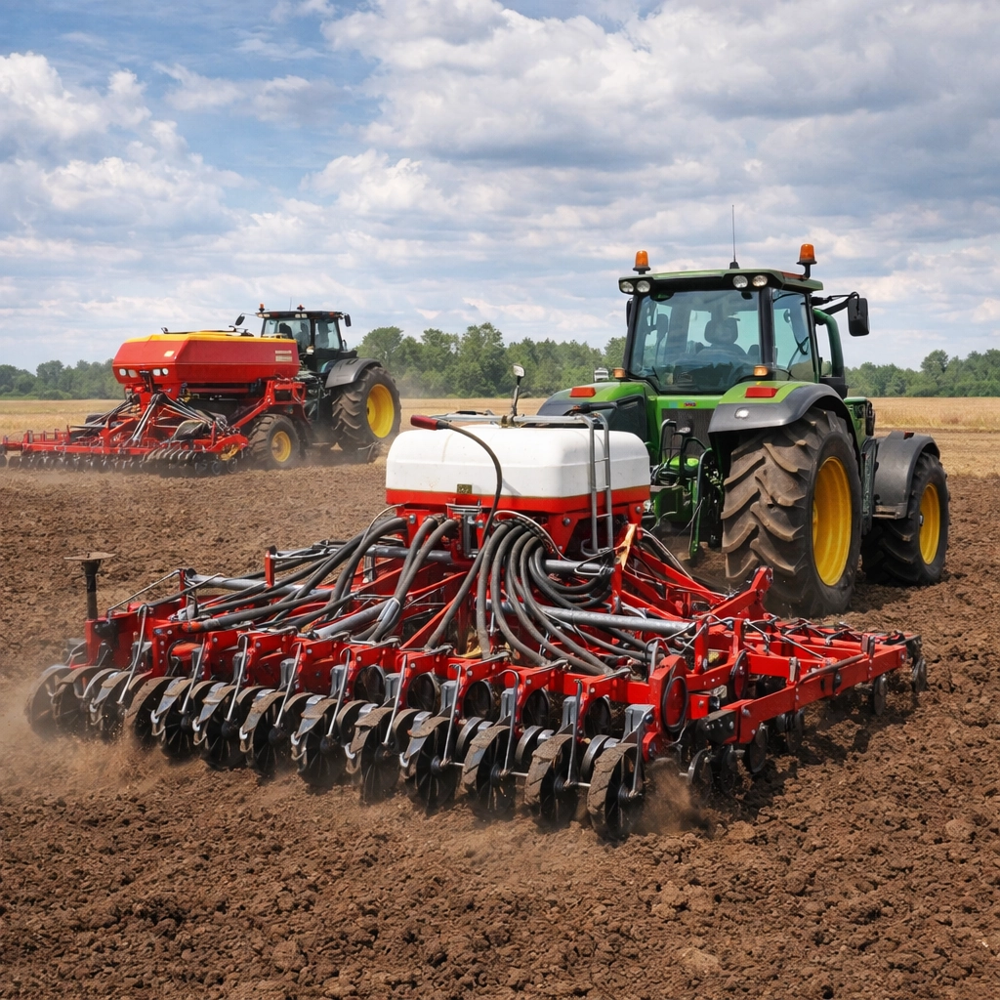
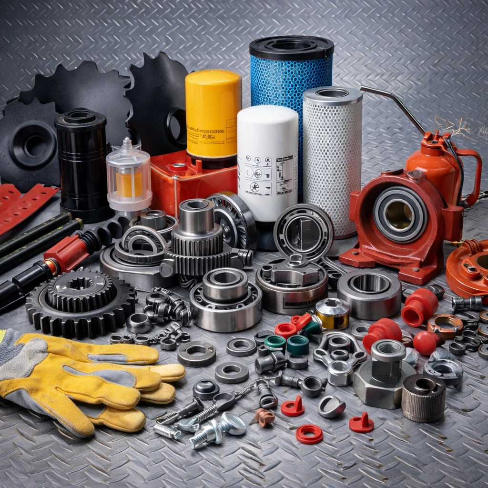
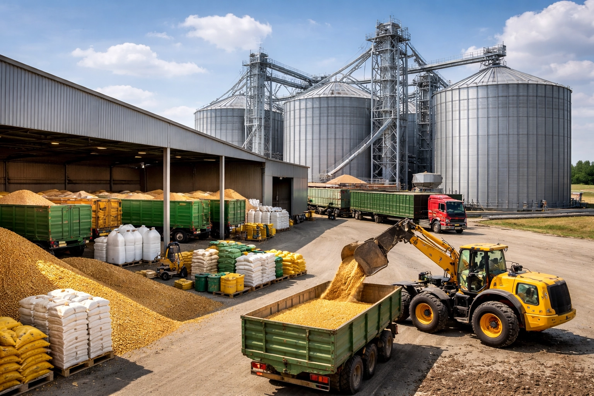
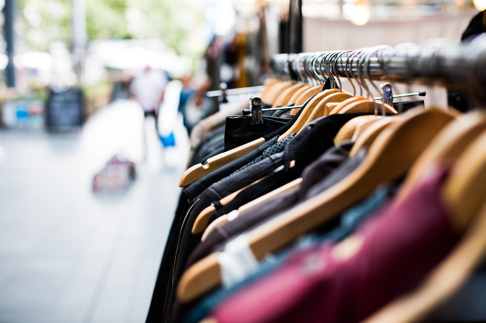
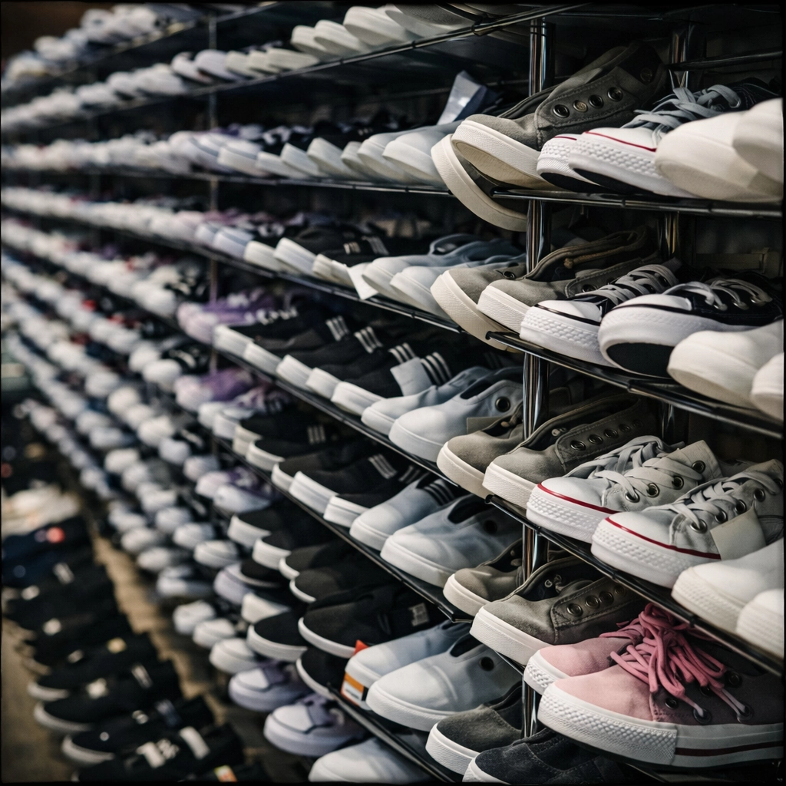

Megbízható nagykereskedelmi megoldásokat kínálunk vállalkozása számára
Közvetlen beszerzés és folyamatos ellátás
Szorosan együttműködünk a gyártókkal és a gazdaságokkal, hogy biztosítsuk a stabil mennyiségeket, a megbízható logisztikát és a zavartalan szállításokat egész évben.
Megbízható minőségellenőrzés
Minden terméket az iparági szabványoknak megfelelően választunk ki és kezelünk, különös tekintettel a tárolási, szállítási és megfelelőségi követelményekre.
Egy partner több kategóriához
Mezőgazdasági termékek, étkezési olajok, berendezések, textíliák és virághagymák – egyszerűsített beszerzés egyetlen nagykereskedelmi beszállítótól, időt és működési költségeket takarítva meg.
Élelmiszerek nagykereskedelme, beleértve a napraforgóolajat és az étkezési olajokat és zsírokat
Találd meg álmaid lakhelyét több mint 10 ezer ingatlan közül választhatsz.
Napraforgó olaj
Alapvető termékkategória, amely iránt nagy a kereslet a kiskereskedelmi és az élelmiszer-feldolgozási szektorban. Finomított és finomítatlan formátumban kapható, főzéshez, palackozáshoz és ipari felhasználásra alkalmas. Az ellátási lehetőségek közé tartoznak a palackozott termékek, a nagy kiszerelésű tartályok és a nagy tételben történő szállítás.
Étkezési olajok
Növényi alapú olajok széles választéka kulináris felhasználásra, élelmiszergyártásra és sajátmárkás forgalmazásra. Biztosítjuk a következetes beszerzést és a termékek nyomon követhetőségét.
Élelmiszer-minőségű zsírok
Professzionális konyhák, pékségek és ipari gyártósorok számára tervezett termékek. A stabil összetétel és a magas hőmérsékletű feldolgozás alatti teljesítmény kulcsfontosságú kiválasztási kritériumok.
Mezőgazdasági termékek nagykereskedelme
Széles választékban szállítunk mezőgazdasági termékeket nagykereskedők, forgalmazók és élelmiszer-termelő vállalkozások számára. Portfóliónk alapvető árucikkeket és friss termékeket foglal magában, amelyeket közvetlenül gazdaságokból és megbízható termelőktől szerzünk be.
Gabona
Nagy tételben szállítunk gabonát élelmiszer-feldolgozás, takarmánygyártás, export és kereskedelmi vállalatok számára. Nagy mennyiségben is szállítunk, rugalmas csomagolási és szállítási lehetőségekkel.
Magvak és állati takarmányok
Mezőgazdasági vállalkozások, állattartó telepek és viszonteladók számára készült termékek. Megbízható beszállítókkal dolgozunk együtt a tápanyag-egyenletesség és a stabil elérhetőség biztosítása érdekében.
Gyümölcsök és zöldségek
Friss és tárolt termékek termelőktől és mezőgazdasági szövetkezetektől. Az ellátás szezonális ciklusok szerint történik. A termékeket méret és osztály szerint válogatjuk.
Ültetési ellátás
Virágmagok és ültetési anyagok
Virágmagokat és dísznövényeket szállítunk kereskedelmi termesztéshez, tereprendezéshez és kiskereskedelmi forgalmazáshoz. Beszerzésünk az állandó minőségre, a fajtabiztonságra és a szezonális ültetési programokhoz való alkalmasságra összpontosít.
Our assortment is structured to meet the needs of professional horticulture, garden centers, and project-based landscaping, with attention to planting timelines, storage requirements, and regional climate conditions. We support clients in planning seasonal procurement and maintaining stable supply volumes for both retail and large-scale planting initiatives.
- Ültetési díszhagymák
- Virágmag választék
- Nagykereskedelmi szállítás tereprendezési projektekhez
- Csomagolás és logisztikai támogatás

Mezőgazdasági gépek, berendezések és anyagok
Mezőgazdasági gépek, speciális berendezések és kapcsolódó anyagok nagykereskedelmi forgalmazásával foglalkozunk mezőgazdasági vállalkozások, gazdaságok, vállalkozók és szolgáltatók számára. Arra összpontosítunk, hogy megbízható, skálázható megoldásokat kínáljunk, amelyek támogatják a gépesítést, a termelékenységet és a működési hatékonyságot a teljes mezőgazdasági értékláncban.

Traktorok és erőgépek
Közepes és nagy teljesítményű traktorokat kínálunk szántóföldi műveletekhez, szállításhoz és nehéz mezőgazdasági munkákhoz, beleértve a gazdaság méretéhez és a terepviszonyokhoz igazított konfigurációt is.

Betakarító gépek
Gabonafélék, kukorica és egyéb növények betakarítására tervezett kombájnokat és betakarító tartozékokat forgalmazunk, biztosítva a működési hatékonyságot a csúcsidőszakokban.

Talajművelő berendezések
Ekéket, kultivátorokat, boronákat és talajművelő rendszereket kínálunk, amelyek támogatják a talaj-előkészítést, javítják a szerkezetet és optimalizálják a terméshozamot.

Vető- és trágyázórendszerek
Vetőgépeket, vetőgépeket és műtrágyaszórókat kínálunk, amelyek lehetővé teszik a precíziós mezőgazdaságot és a hatékony anyagkijuttatást.

Alkatrészek és fogyóeszközök
Cserealkatrészeket, szűrőket, kenőanyagokat, hidraulikus elemeket és kopóalkatrészeket szállítunk, amelyek a berendezések folyamatos üzemeltetéséhez és karbantartásához szükségesek.

Tárolási és kezelési megoldások
Berendezéseket és anyagokat biztosítunk mezőgazdasági termékek tárolására, szállítására és kezdeti feldolgozására, beleértve a kezelőrendszereket és a mezőgazdasági logisztikai infrastruktúrát is.
Textil-, ruházati és lábbeli kereskedelem

Ruhakollekciók nagykereskedelmi forgalmazása
Szezonális és egész éves ruházati cikkeket kínálunk, beleértve a hétköznapi viseletet, az üzleti öltözéket, a sportruházatot és a felsőruházatot, a kiskereskedelmi formátumokhoz és a regionális piaci preferenciákhoz igazítva. Tevékenységünk magában foglalja a választéktervezést, a mérettartomány szerinti strukturálást és az ismételt rendelések koordinálását az ellátás folyamatosságának és a stabil eladási arányok biztosítása érdekében. Márkás és saját márkás termékekkel egyaránt dolgozunk, támogatva partnereinket a pozicionálásban, az árképzési stratégiában és a kollekciófrissítésekben, összhangban a szezonális keresleti ciklusokkal.
Textil- és szövetbeszerzés
Természetes és szintetikus anyagokat, műszaki textíliákat és kiegészítő anyagokat forgalmazunk ruhagyártáshoz, kárpitozáshoz és sajátmárkás gyártási programokhoz.

Tömeges lábbeli kínálat
Több kategóriában kínálunk lábbeliket – mindennapi, sport-, professzionális és védőfelszerelésként –, biztosítva az egységes méretezési mátrixokat, a termékek megbízhatóságát és az ismétlődő szállítási képességet.